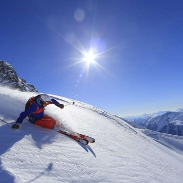

Winter Holidays
Rating of ski resorts
| resort | for snowboarding | for ski | heights(m) | average cost per day |
| CHAMONIX | 5 | 4 | 995—4807 | 8 |
| ZAKOPANE | 4 | 6 | 750-1985 | 5 |
| GUDAURI | 9 | 9 | 1990-3007 | 5 |
| BUKOVEL | 5 | 8 | 860-1372 | 6 |
| KURSHAVEL | 7 | 8 | 1100-2738 | 10 |
| ZELL AM SEE | 6 | 9 | 756-2200 | 7 |
SNOWBOARDING IN CHAMONIX
Situated at the foot of Mont Blanc, Chamonix offers a huge variety of terrain including some of the world’s best freeriding.
Cruise the often sunny north facing slopes of Le Brévent, or for a more mellow snowboarding head for the rolling terrain and wide-open pistes of Le Tour.

CHAMONIX